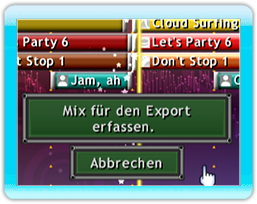
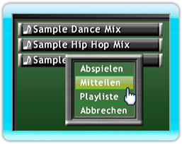
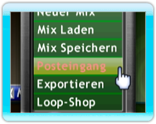

20 |
Exportieren und Mitteilen |
 |
|

Um einen Mix zu exportieren, laden Sie den Mix in den Arranger und klicken Sie dann auf das Mix-Menü Symbol und wählen Sie ‘Exportieren’ aus. Sie werden aufgefordert einen Namen für den Mix einzugeben und nach Ihrer Email-Adresse gefragt (optional), um einen Quicklink zum herunterladen Ihres Mixes zu erhalten.
Nachdem der Titel zum Mix Superstar Server hochgeladen wurde, erhalten Sie einen Code, den Sie bei www.mixsuperstar.com eingeben können, um Ihren Mix herunterzuladen.
WiiConnect24 Um einen Mix mit Ihren Wii-Freunde über WiiConnect24 zu teilen, öffnen Sie den Loop-Browser und gehen Sie auf ‘Meine Mixe’. Markieren Sie den Mix, den Sie mit anderen teilen wollen und drücken Sie den B-Knopf und wählen Sie ‘Mitteilen’ aus. Sie können bis zu 8 Freunde auswählen mit denen Sie den Mix gleichzeitig teilen wollen. Wenn Sie Ihre Auswahl getroffen haben, drücken Sie auf ‘Abschicken’. Wenn Ihr Mix andere Mixe oder Sample, die Sie aufgenommen haben, beinhaltet, müssen Sie diese getrennt schicken.
Wenn Sie einen geteilten Mix von einem Wii-Freund erhalten, blinkt das Mix-Menü Symbol. Drücken Sie auf das Symbol und wählen Sie ‘Posteingang’. In diesem Menü, können Sie Mixe importieren, indem Sie sie markieren und dann auf dem ‘Importieren’-Knopf drücken, der sich rechts am Bildschirm befindet. Wenn Sie eine Datei importieren, wird sie aus dem Posteingang gelöscht und kann in dem Loop-Browser-Bereich ‘Meine Mixe’ gefunden werden.
Hinweis: Alle Wii-Freunde werden angezeigt, allerdings nur die, die Mix Superstar auf ihre Wii-Konsole heruntergeladen haben, können Musik über diesen Service mit anderen teilen. Es empfiehlt sich eine Nachricht vorab zu schicken um zu bestätigen, dass sie Mix Superstar schon heruntergeladen haben. |
 |
 |
 |